25. [1+1+3] Annulation of Diazoenals and Vinyl Azides: Direct Synthesis of Functionalized 1-Pyrrolines via a New Olefination V. Kanchupalli, S. Katukojvala* Angew. Chem. Int. Ed. 2018,57, 5433
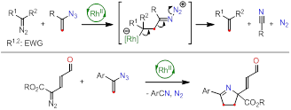
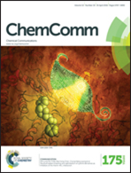
24. Ag(I)-catalyzed Intramolecular Transannulation of Enynone Tethered Donor Acceptor Cyclopropanes: A New Synthesis of 2,3-Dihydronaphtho[1,2-b]furans S. G. Dawande, M. Harode,
J. Kalepu, S. Katukojvala*Chem. Commun. 2016, 52, 13699
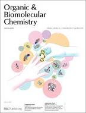
23. Rhodium - Catalyzed Pyridannulation of Indoles With Diazoenals: A Direct Approach to Pyrido[1,2-a]indoles S. G. Dawande, B. S. Lad, S. Prajapati, S. KatukojvalaOrg. Biomol. Chem. 2016,14, 5569 (Invited article for New Talent - Themed Issue)
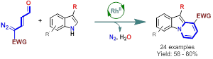
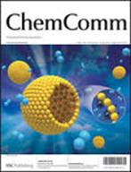
22. An Unprecedented Benzannulation of Oxindoles With Enalcarbenoids: A Regioselective Approach to Functionalized Carbazoles K. S. Rathore, B. S. Lad, H. Chennamsetti, S. Katukojvala* Chem. Commun. 2016, 52, 5812
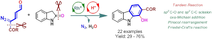
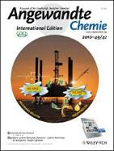
21. Dienamine Activation of Diazoenals: Application to the Direct Synthesis of Functionalized 1,4-Oxazines J. Kalepu, S. Katukojvala* Angew. Chem. Int. Ed. 2016,55, 7831
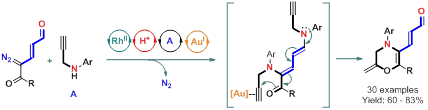
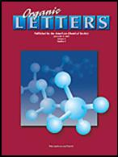
20. Pyridazine N-Oxides as Precursors of Metallocarbenes: Rhodium-Catalyzed Transannulation with Pyrroles V. Kanchupalli, D. Joseph, S. Katukojvala* Org. Lett. 2015,17, 5878
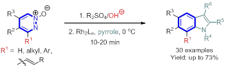
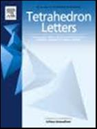
19. Rh(II) Catalyzed Cyclopropanation of Styrenes With Enaldiazo Esters: Diastereoselective Synthesis of Enalcyclopropanes K. S. Rathore and S. Katukojvala* Tetrahedron Lett. 2014, 55, 6370
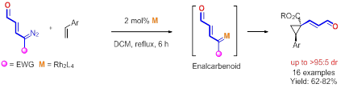
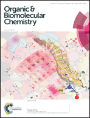
18. Regioselective p-Extension of Indoles With Rhodium Enalcarbenoids - Synthesis of Substituted Carbazoles K. S. Rathore, M. Harode and S. Katukojvala* Org. Biomol. Chem. 2014, 12, 8641
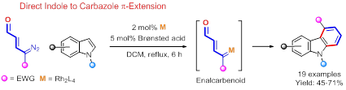
17. Synergistic Rhodium(II) Carboxylate and Bronsted Acid Catalyzed Multicomponent Reactions of Enalcarbenoids: Direct Synthesis of a-Pyrrolylbenzylamines S. G. Dawande, V. Kanchupalli, B. S. Lad, J. Rai, S. Katukojvala*Org. Lett. 2014, 16, 3700
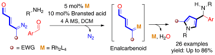
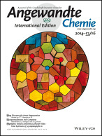
16. Rhodium Enalcarbenoids: Direct Synthesis of Indoles by Rhodium(II) Catalyzed [4+2] Benzannulation of Pyrroles S. G. Dawande, V. Kanchupalli, J. Kalepu, H. Chennamsetti, B. S. Lad, S. Katukojvala*Angew. Chem. Int. Ed. 2014, 53, 4076 (hot paper)
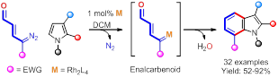
15. Medium-ring aminocyclitols: A concise synthesis of nine- membered aminocarbasugar analogues and the solid-state supramolecular architectures of two key precursors
Mehta, G.; Mohanrao, R.; Katukojvala, S.; Landais, Y.; Sen, S. Tetrahedron Lett. 2011, 52, 2893-2897
14. Cycloninitols: a flexible synthetic approach towards nine-membered carbasugar analogues Mehta, G.; Pallavi, K.; Katukojvala, S. Tetrahedron Lett. 2009, 50, 4519
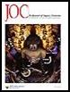
13. Spirodiepoxides: Synthesis of Epoxomicinoids Zhang, Y.; Cusick, J. R.; Ghosh, P.; Shangguan, N.; Katukojvala, S.; Inghrim, J.; Emge, T. J.; Williams, L. J. J. Org. Chem. 2009, 74, 7707
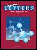
12. Thioacid/azide amidation: An improved route to N-acyl sulfonamides
Barlett, K. N.; Kolakowski, R. V.; Katukojvala, S.; Williams, L. J. Org. Lett. 2006,8, 823
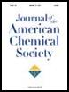
11. Spirodiepoxides in total synthesis: Epoxomicin Katukojvala, S.; Barlett, K. N.; Lotesta, S. D.; Williams, L. J. J. Am. Chem. Soc. 2004,126, 15348
10. The reaction of thioacids with azides: A new mechanism and new synthetic applications Shangguan, N.; Katukojvala, S.; Greenberg, R.; Williams, L. J. J. Am. Chem. Soc. 2003, 125, 7754
9. Synthetic studies towards the novel fomannosane sesquiterpenoid illudosin: Framework construction Mehta, G.; Katukojvala, S. Tetrahedron 2003, 59, 3475
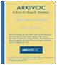
8. Synthetic studies towards pteridanone: A novel protoilludane-type tricyclic sesquiterpenoid Mehta, G.; Ghosh, P.; Katukojvala, S. ARKIVOC, 2003, 3, 92 (In Honor of Prof. Sukh Dev)
7. Enantioselective total synthesis of the novel tricyclic sesquiterpene (-)-Sulcatine-G Mehta, G.; Katukojvala, S. Tetrahedron Lett. 2002, 43, 3319
6. A new synthesis of the tricyclic sesquiterpene sterpurene Mehta, G.; Katukojvala, S. Tetrahedron Lett. 2002, 43, 703
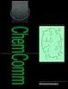
5. Total synthesis of the novel tricyclic sesquiterpene sulcatine-G Mehta, G.; Katukojvala, S. Chem. Commun. 2001, 1892
4. Enantioselective total syntheses of the novel tricyclic sesquiterpene hydrocarbons (+)-and (-)-kelsoene. Absolute configuration of the natural product Mehta, G.; Katukojvala, S. Tetrahedron Lett. 2001, 42, 2855
3. A stereoselective total synthesis of the novel sesquiterpene kelsoene Mehta, G.; Katukojvala, S. Tetrahedron Lett. 1999, 40, 4877
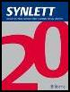
2. Synthetic studies towards novel terpenic natural products kelsoene and poduran: construction of the complete 4-5-5- fused tricarbocyclic core Mehta, G.; Katukojvala, S. Synlett 1999, 555
1. Triquinane-derived macrocyclic lactones and a [2]-catenane: Synthesis and characterization Mehta, G.; Katukojvala, S.; Vidya, R.; Uma, R.; Kunwar, A. C.; Ravikumar, K.; Vairamani, M. Tetrahedron 1998,54, 10879
Research Highlights
A rhodium-catalyzed olefination for the construction of synthetically challenging electrophilic terminal olefins was developed. This new reaction was utilized in the one-step synthesis of functionalized 1-pyrroline heterocycles.
Read More >>
Prospective students
Ph.D. Students: Positions with fellowships are available
Project Students: Applications are invited
Research Associate: Applications are invited
Contact
+91-755-2691325 (Off.)
+91-755-2691326 (Lab)
+91-755-2692392
sk@iiserb.ac.in
Department of Chemistry | Indian Institute of Science Education & Research, Bhopal, MP 462066, India
Web page best viewed by Internet Explorer